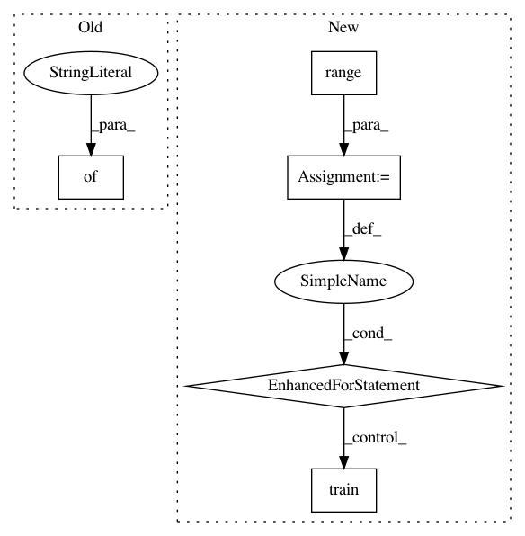

8c3810bf74e7521ee3ff09b043d0c41619c93809,mvpa2/tests/test_mdp.py,,test_nodeargs,#,170
Before Change
pcm = PCAMapper(alg="PCA", nodeargs={"svd": svd_val})
assert_equal(pcm.node.svd, svd_val)
for output_dim in [0.0, 0.5, 0.95, 0.99, 10, 50, 100]:
pcm = PCAMapper(alg="PCA", nodeargs={"output_dim": output_dim})
assert_equal(pcm.node.output_dim, output_dim)
After Change
assert_equal(pcm.node.svd, svd_val)
for output_dim in [0.5, 0.95, 0.99, 10, 50, 100]:
pcm = PCAMapper(alg="PCA", output_dim=output_dim)
for i in range(2): // so we also test on trained one
if isinstance(output_dim, float):
assert_equal(pcm.node.desired_variance, output_dim)
else:
assert_equal(pcm.node.output_dim, output_dim)
pcm.train(ds)
if isinstance(output_dim, float):
assert_not_equal(pcm.node.output_dim, output_dim)
// some dimensions are chosen
assert_true(pcm.node.output_dim > 0)
In pattern: SUPERPATTERN
Frequency: 3
Non-data size: 5
Instances
Project Name: PyMVPA/PyMVPA
Commit Name: 8c3810bf74e7521ee3ff09b043d0c41619c93809
Time: 2011-12-07
Author: debian@onerussian.com
File Name: mvpa2/tests/test_mdp.py
Class Name:
Method Name: test_nodeargs
Project Name: tensorflow/models
Commit Name: adfd5a3aca41638aa9fb297c5095f33d64446d8f
Time: 2018-03-20
Author: 31663267+k-w-w@users.noreply.github.com
File Name: official/mnist/mnist.py
Class Name:
Method Name: main
Project Name: ray-project/ray
Commit Name: 57544b1ff9f97d4da9f64d25c8ea5a3d8d247ffc
Time: 2020-05-11
Author: sven@anyscale.io
File Name: rllib/examples/rock_paper_scissors_multiagent.py
Class Name:
Method Name: run_heuristic_vs_learned